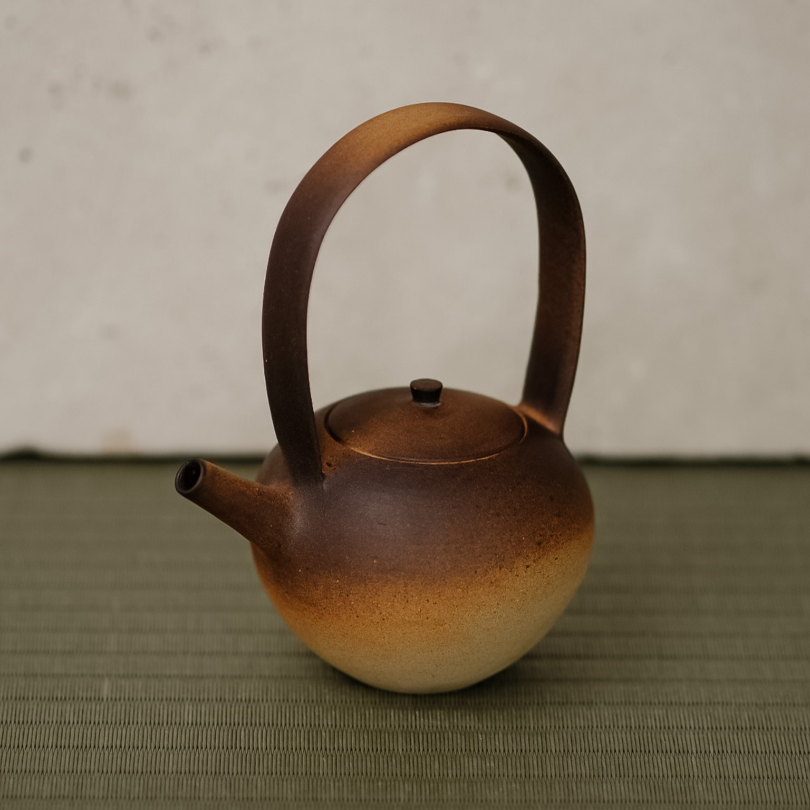
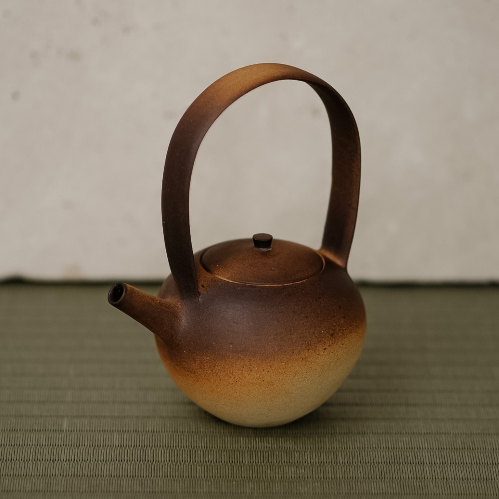
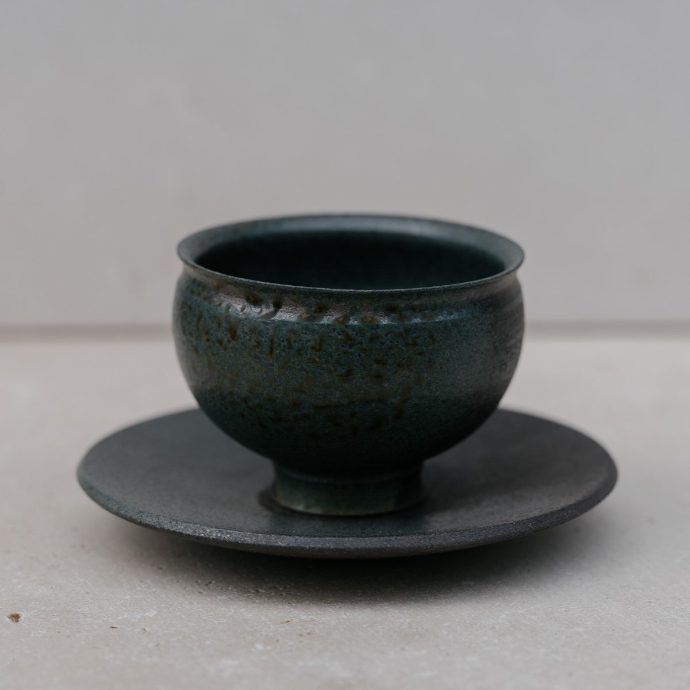

DRAGON SCALE TEAPOT
Pris 1.250 DKK
Introducerer Dragon Scale Teapot fra Tōseibo - en smuk håndlavet keramisk tekande, der forener æstetisk appel med funktionalitet. Dragon Scale Teapot er omhyggeligt designet til at være et praktisk valg til dit daglige brug, hvor håndtaget er med til at sikre et behageligt og fast greb. Tekanden er skabt med en unik mørk gradient glasur som tilføjer varme og karakter, der repræsenterer dragon scale. Uanset om du er en te-drikker eller bare sætter pris på smukt design, er Dragon Scale Teapot garanteret at hæve din oplevelse til det næste niveau.
 

PRAKTISK INFO
Mål: 12 B x 20 H cm. Denne tekande er ikke egnet til opvaske-maskinen, men bør vaskes i hånden for at vedligeholde kvaliteten.
FLERE PRODUKTER
